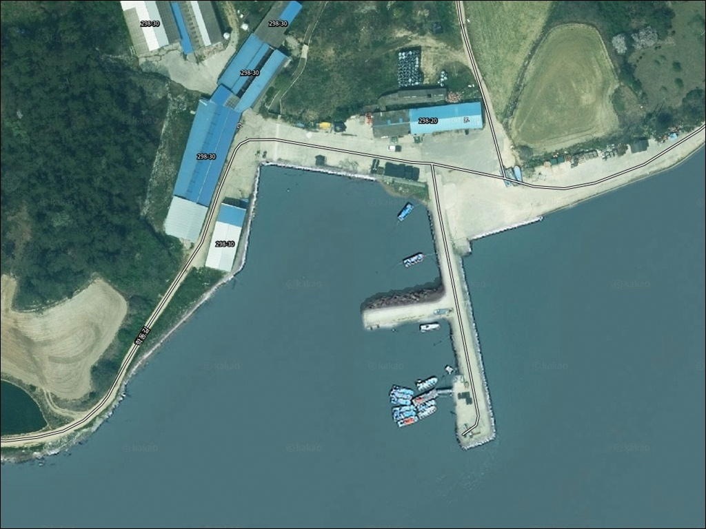
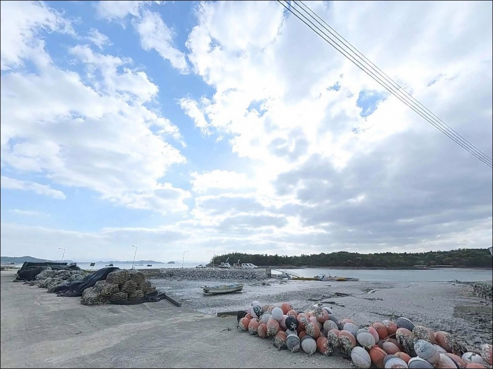
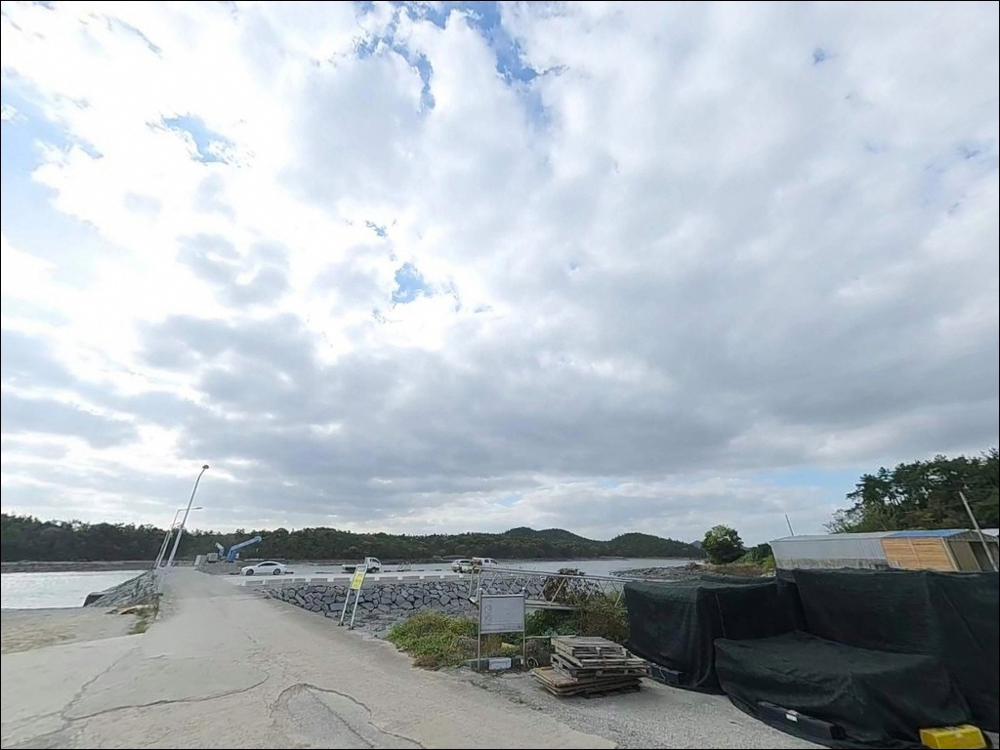
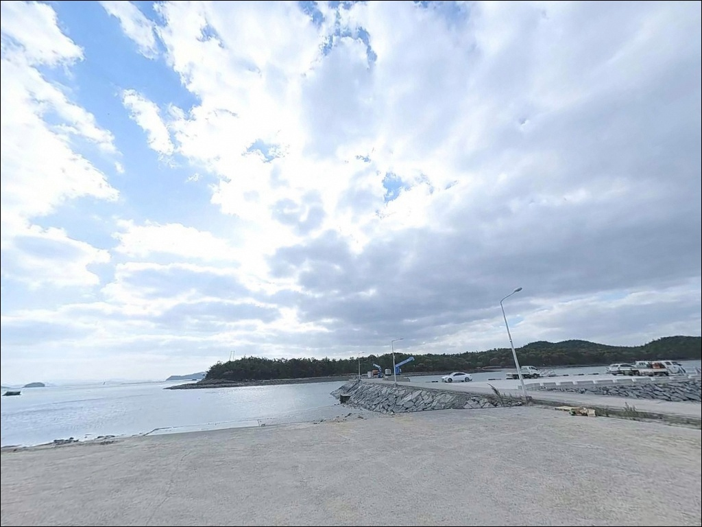
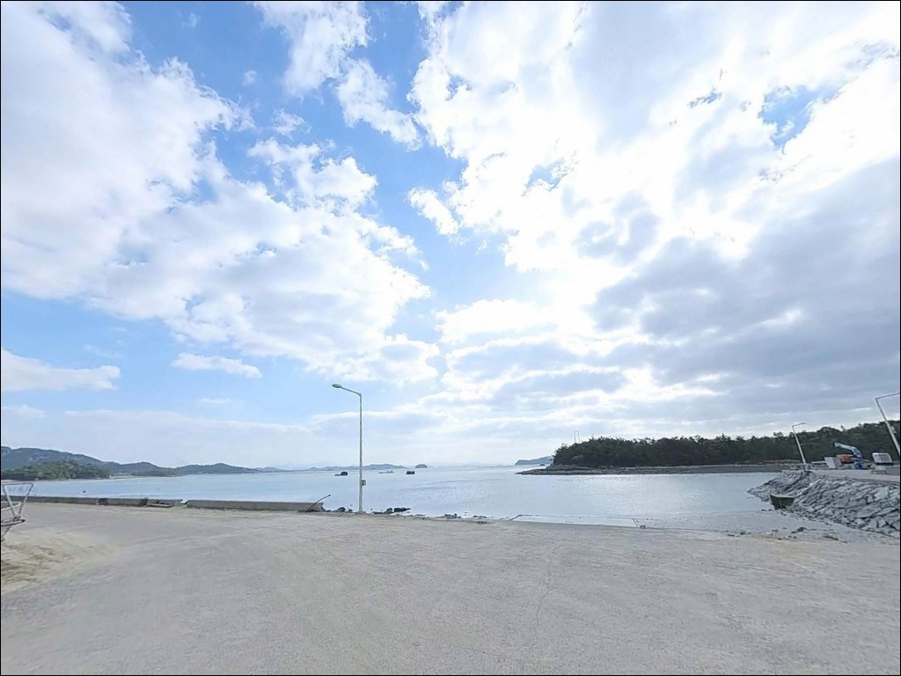
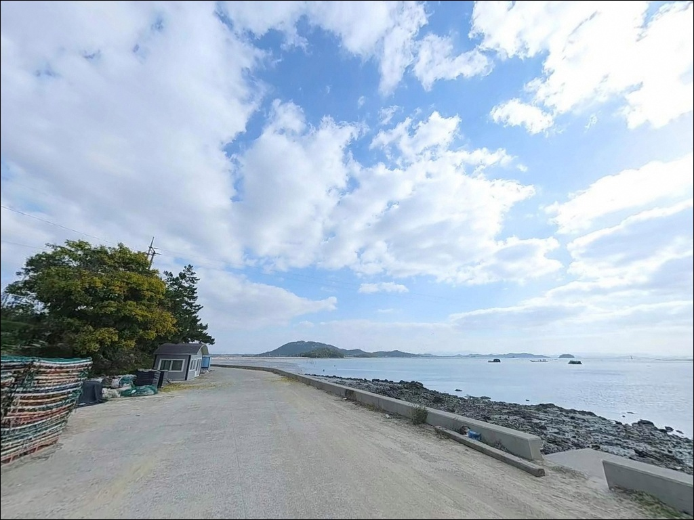
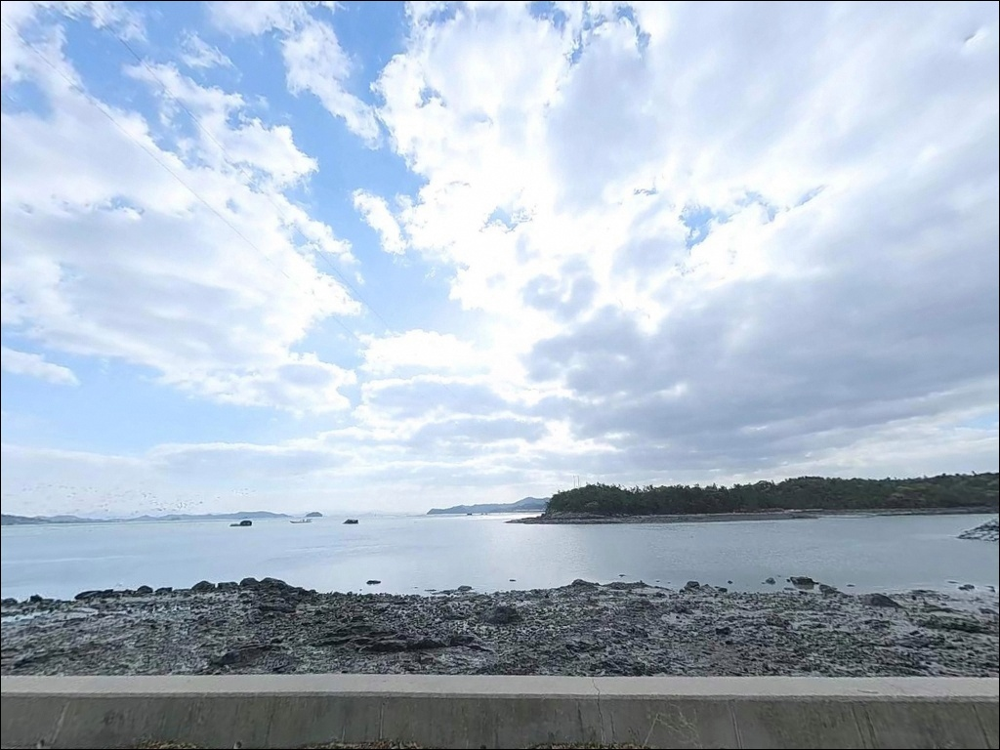
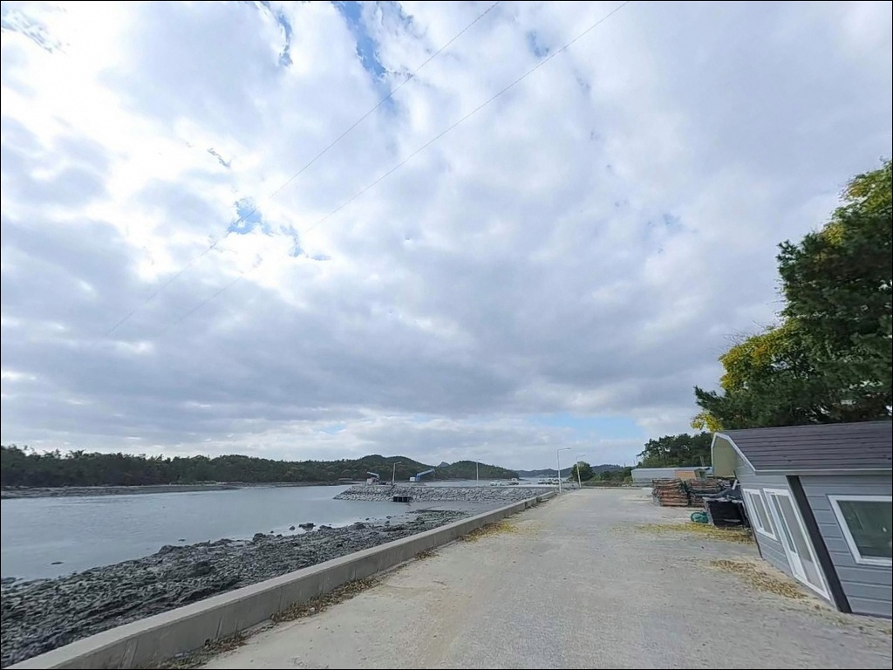
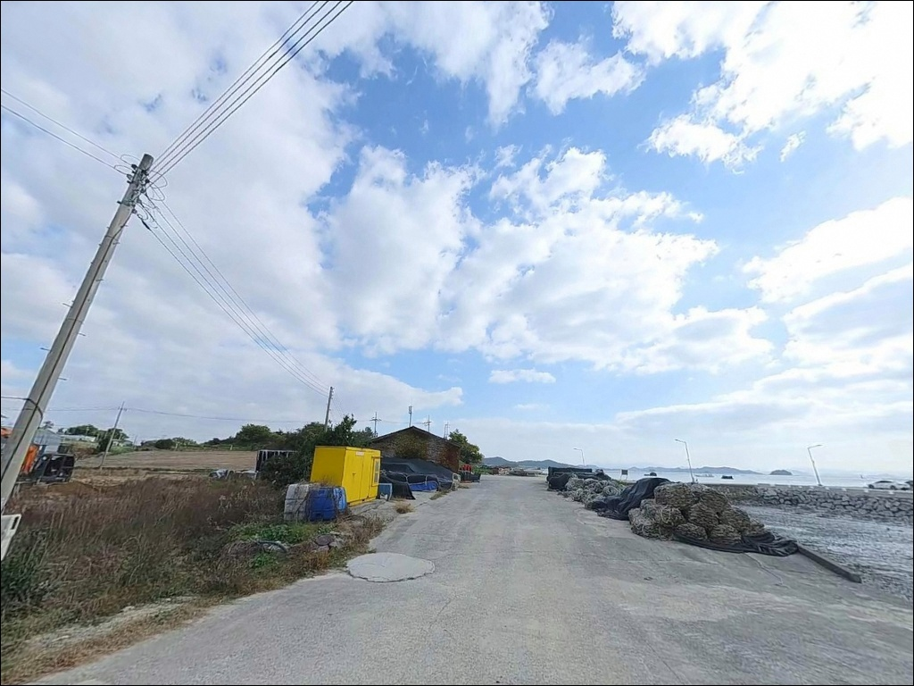

삼정방파제, 학동리선착장, 전남 해남군 바다와 가장 가까이 머무는 차박, 낚시 해안 명소
이 페이지에는 광고(제휴 링크 포함)가 있으며, 광고 링크를 통해 구매하면 운영자가 판매 수익 또는 수수료를 받을 수 있습니다. 포인트 사진: 카카오맵 스카이뷰·로드뷰. 이 페이지의 지도·사진 이미지는 카카오맵의 실제 서비스 이미지와 다를 수 있습니다.


포인트 안내
삼정방파제(학동리선착장)
전남 해남군 문내면 학동리 173-3
사리 전후 울돌목 조류가 실리는 시간대에는
아무리 무거운 봉돌을 써도
채비가 조류에 밀려 바닥 공략 자체가
어려워지는 상황이 됩니다.
물때 계산 없이 진입하면
낚시 자리를 잡고도 제대로 공략하지 못하는
결과로 이어지는 포인트입니다.
전남 해남군 문내면 학동리,
우수영관광단지 남동쪽 해안에 자리한
삼정방파제(학동리선착장)는
울돌목(명량해협) 연안을 따라 형성된
소형 방파제 포인트입니다.
온라인 정보가 많지 않은 곳이지만,
울돌목이라는 지형 조건 자체가
이 포인트의 가능성을 설명합니다.
이 글은 삼정방파제(학동리선착장)의
진입 여건, 조류 특성, 낚시 방식 적합성,
차박 가능 조건에 집중합니다.
조황 단정이나 특정 어종 보장은
이 글의 범위에 포함되지 않습니다.

1. 진입 동선과 포인트 접근성
학동리 173-3번지는 문내면 마을도로를 따라
우수영관광단지 남동쪽으로 접근하는 구조입니다.
관광단지 내 도로와 동선이 일부 겹치는 위치여서
공휴일이나 성수기에는
관광 차량과의 교행 여건을 사전에 감안하는 편이 좋습니다.
진입로는 일반 농어촌 마을도로 수준으로
폭이 좁은 편입니다.
소형~중형 차량 기준 진입이 가능하며,
대형 SUV나 캠퍼밴이라면
출발 전 위성지도로 진입로를 먼저 확인하는 것이
불필요한 회차 상황을 막는 기본 준비입니다.
주차는 선착장 인근 소규모 공터를
활용하는 방식이 일반적입니다.
수용 대수가 많지 않은 구조이므로
어선 작업 시간대나 주말에는
우수영관광단지 주차장으로
이동해야 하는 경우도 생깁니다.

2. 차박 환경과 야간 체류 여건
삼정방파제(학동리선착장) 자체에서
차박을 메인 목적으로 삼기에는
주차 공간이 넉넉하지 않습니다.
낚시 후 짧게 차에서 쉬거나 취침하는 용도라면
공간 여건을 현장에서 먼저 확인하는 것이
기대와 다른 상황을 막는 방법입니다.
야간에는 개인 조명이 필수입니다.
우수영관광단지가 인접해 있어
관광지 외곽 조명이 일부 미치는 편이지만,
방파제 끝단 쪽으로 갈수록
광량이 부족해지는 구조입니다.
울돌목 조류 영향권이라 야간에는
발판 안전 확인이 낮보다 더 중요합니다.
차박을 중심으로 계획하고 있다면
우수영관광단지 주차장을 기점으로 삼고,
삼정방파제까지 도보로 이동하는 동선이
현실적인 선택입니다.
관광지 구역 야영 가능 여부는
사전에 해남군 또는 현장에서 확인하는 것이 먼저입니다.


3. 주변 편의시설 및 인프라 현황
반경 3km 이내 문내면 소재지 방향으로
하나로마트와 편의점이 있습니다.
출발 전 식수·얼음·낚시 소품을
미리 갖춰두면 현장에서의 번거로움을
줄일 수 있습니다.
우수영관광단지까지 도보 또는 차로
5분 거리 안에 있어
기념관·주차장 일원의 편의시설을
이용하는 것도 가능합니다.
문내면 소재지 방향에는
주유소와 식당가가 확인되어
연료와 식사를 해결할 수 있습니다.
응급 상황 시 문내보건지소가
반경 10km 이내에 위치합니다.
출조 전 비상약품과 연료를 충분히 준비하는 것이
기본 안전 조건입니다.

4. 진입 전 반드시 챙겨야 할 준비사항
삼정방파제(학동리선착장) 방문 전에
가장 먼저 확인할 것은 물때입니다.
울돌목은 최대 유속이 13노트에 달하는
한국에서 조류가 가장 빠른 해역 중 하나로,
초들물~중날물 타이밍을 기준으로
출발 시각을 계산하는 것이 맞습니다.
사리 전후에는 봉돌 무게를 올려도
채비 흐름을 버티기 어려운 구간이 생깁니다.
원투 채비라면 평소보다 무거운 봉돌을
여분으로 준비해두는 편이 좋습니다.
암반 저질 특성상 밑걸림이 있는 구간도 있으므로
채비 여분을 충분히 챙기는 것이 실전 준비입니다.
마을 선착장이자 어선 작업 공간이라
어선 이동 동선과 어구에 닿지 않도록
자리를 선택하는 것이 기본 매너입니다.
기상 예보는 당일 아침에 다시 확인하고,
풍향 변화가 빠른 해협 지형임을 감안해
철수 기준을 미리 정해두는 편이 좋습니다.
출조 전에 최신 조황은 꼭 검색해 보시기 바랍니다.

5. 울돌목 조류가 만드는 낚시 여건 분석
삼정방파제(학동리선착장)는
울돌목(명량해협) 동편 연안을 따라
형성된 소형 방파제 포인트입니다.
방파제와 갯바위 구조가 혼재한 해안선으로,
방파제 외측 방향이 조류 영향을
직접 받는 열린 구조입니다.
우수영항 인근 해역 기준으로
이 일대 저질은 암반 성격이 강한 편입니다.
수심은 방파제 끝단으로 갈수록
깊어지는 경향이 있으며,
조류가 빠른 외측에서는
채비 컨트롤이 바닥 공략의 핵심이 됩니다.
울돌목 인근 방파제는
조류 방향과 물때 타이밍이
채비 선택보다 먼저 결정되어야 하는 포인트입니다.
아직 낚시 커뮤니티에 조황 기록이
많이 쌓인 곳은 아닙니다.
같은 해협 연안에서 기대해볼 수 있는 어종으로는
감성돔, 돌돔, 우럭, 노래미, 붕장어,
농어, 숭어, 참돔 등이 있습니다.
봄과 겨울에는 감성돔·우럭·노래미,
여름~가을에는 농어와 참돔까지
기대해볼 수 있는 해역입니다.
방문 전 해남 문내면 일대 최신 조황을
반드시 검색해보시기 바랍니다.


6. 조류 강한 포인트에서 낚시 스타일 고르는 법
이 포인트에서 가장 기본이 되는 낚시 방식은
원투낚시입니다.
암반 저질과 조류 흐름이 있는 이 일대에서는
봉돌을 처박는 방식으로
바닥층 어종을 집중 공략하는 전략이
지형 조건과 잘 맞습니다.
루어낚시는 조류가 살아나는
초들물~중날물 구간을 노리는 방식이 유효합니다.
미노우나 메탈지그를 활용해
농어나 우럭을 탐색하는 캐스팅 낚시가
이 해역 구조에 어울리는 스타일입니다.
조류가 실리는 방향으로 캐스팅하는 것이
기본 공략 방향입니다.
찌낚시도 가능하지만
일반 반유동 채비로는 조류를 버티기 어렵습니다.
무거운 부력의 구멍찌나 봉돌 부하가 큰 채비를
사용하는 방식이 이 포인트 조류 조건에 맞으며,
정조 전후 짧은 타이밍을 집중적으로
공략하는 전략이 실전적입니다.
감성돔 릴찌낚시를 주로 하는 낚시인이라면
조류 세기에 맞는 채비 조정이
조과 차이를 만드는 핵심입니다.

7. 대안 포인트와 플랜 B 동선
삼정방파제(학동리선착장)에서
조류가 너무 강하거나 주차 여건이
여의치 않을 때 가장 먼저 이동할 곳은
우수영항 방파제입니다.
약 2km 거리로 가깝고,
삼정방파제보다 규모가 크며
발판 여건도 편한 포인트입니다.
진도농공단지 동측 방파제도
공식 포인트 데이터가 등록된 곳으로
우수영항 기준 약 2.4km 거리입니다.
저질 암반, 적정 물때 초들물~중날물이 확인되는 포인트로
감성돔, 돌돔, 우럭, 노래미, 붕장어를
기대해볼 수 있는 인근 대안입니다.
차박을 중심으로 계획하는 경우라면
전라우수영 국민관광지 인근 주차장이
가장 현실적인 대안입니다.
주차 여건이 안정적이고
해안 조망이 가능한 위치입니다.
야영 허용 여부는 현장 또는
해남군에 사전 확인이 필요합니다.
진입로와 주차 여건이 좁은 포인트에서는
우수영관광단지 주차장을 플랜B로 미리 확인해두는 것이
방문 성패를 가릅니다.

울돌목 조류를 이해하면
삼정방파제의 가능성이 보입니다
원투낚시나 루어낚시로
강한 조류 환경을 즐기는 낚시인이라면
삼정방파제(학동리선착장)의 지형 조건은
충분히 도전해볼 만한 구조입니다.
울돌목 연안 특유의 빠른 조류와
암반 지형이 결합된 포인트로,
아직 조황 기록이 많지 않아
탐색형 출조로 접근하는 것이 맞습니다.
반면 물때 계산 없이 사리 전후에 진입하거나,
가벼운 채비만 가져오면
낚시 자리를 잡고도 써먹기 어려운 상황이 됩니다.
물때 확인, 채비 준비, 진입로 사전 점검,
이 세 가지를 갖추고 가면
기억에 남는 출조가 될 수 있는 포인트입니다.
처음 방문이라면 우수영항 방파제를 기점으로 삼고
삼정방파제를 병행 탐색하는 동선이 효율적입니다.
조류를 이해하고 타이밍을 맞춰 진입하는 낚시인에게,
울돌목 연안의 차박과 낚시는
충분한 여운을 남기는 출조가 됩니다.